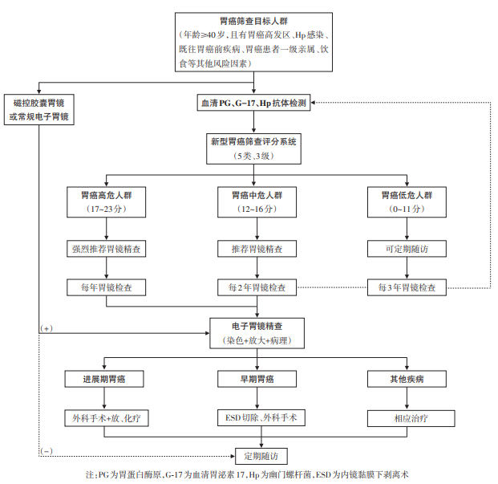
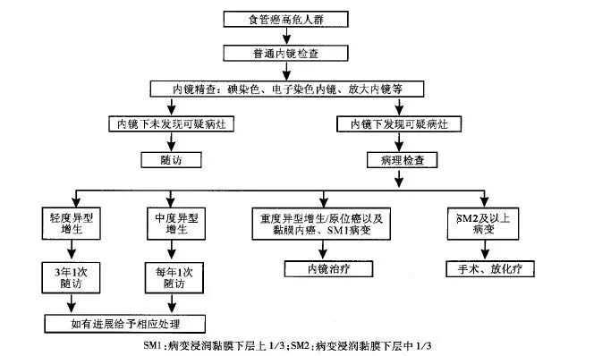

你好，欢迎来到《医学通识50讲》。我是薄世宁。
在上一章，我们讲了医生的精进。医生要闯过无数关卡，经过系统的思维训练和实践，才能更好地为病人服务。
今天进入新的章节：健康的修炼。
说说怎么聪明地管理健康；在疾病面前，怎么科学决策；怎样理性地面对生命终点。
没人想去医院，但是谁也离不了医院。如何阻断去医院这条路，让咱们尽可能推迟去医院的时间呢？这就是这节课要说的：健康的智慧。
疾病不是突然发生的，而是突然发现的。生活中的细枝末节，可能也就决定了何时去医院。只要干预这些细节，那就一定可以在某种程度上把自己挡在去医院的路上。
这就好比是，尽管很多病确切的因果关系我们还没有完全掌握，但是只要打断疾病因果关系链条中的某个环节，那么同样可以预防疾病。
多数慢性病出现症状前的因果关系链条概括为：高危因素—修复、代偿能力下降—疾病隐性期。
接下来，我就从疾病发作之前的这三个关键环节出发，分为三个层面，讲讲如何科学管理健康。
避免高危因素
什么是高危因素呢？就是目前已知的，对于疾病的生成和发展具有高度相关性的某些因素。
1. 基因。
美国著名影星安吉丽娜·朱莉，携带一种叫做BRCA1的基因，她患乳腺癌、卵巢癌的几率大大增加。这种基因就是高危因素。
2. 慢性病毒或者细菌感染。
乙肝病毒感染可以引起肝炎，之后引起肝硬化、肝癌。
3. 一级致癌物。
比如，雾霾、亚硝酸盐、槟榔、黄曲霉素等。
4. 饮食过烫。
喝热茶当水温过高，超过65度的时候，食管上皮受损，上皮细胞加速分裂，这样食管癌发病风险大大增加。饮食过烫，这也是高危因素。
5. 不健康的饮食习惯。
医学权威期刊《柳叶刀》（The Lancet）指出，不健康的饮食习惯是全球死亡的首要危险因素。中国因为饮食结构问题造成的心血管疾病死亡率、癌症死亡率都是世界人口前20的大国中的第一名。包括：钙、膳食纤维、水果和蔬菜摄入不足，红肉、加工肉类摄入过多，高纳饮食、含糖饮料等等。
6. 肥胖
肥胖会引起糖尿病、心血管疾病，哮喘发病率增高，肥胖还可能与大脑萎缩有关。
肥胖还带来了13种癌症的高发。来自华盛顿大学医学院的一项研究指出，引起中青年女性直肠癌、结肠癌发病率上升的一个重要危险因素就是肥胖。只要是BMI超过30（BMI是体重指数，是用体重的公斤数除以身高米数的平方），结、直肠癌风险立刻增加近一倍。所以，肥胖也是多种疾病的高危因素。
这些高危因素中，除了基因没有好办法改变，安吉丽娜·朱莉采取的用手术切除靶器官的做法，目前还有争议。
但是，避免其他的高危因素，也就减少了日积月累对器官和细胞的损伤，减少了修复和代偿的压力。也就是从源头上，降低了疾病发生的概率。
所以，针对疾病因果关系链的第一个环节高危因素，我的建议是：
1. 预防或者治疗慢性感染。
比如，通过注射乙肝疫苗，通过阻断传染途径，应用药物抑制乙肝病毒复制等等，就可以在很大程度上避免肝癌的发生。
再比如，注射HPV疫苗预防HPV感染，如果已经有感染，积极治疗也可以有效预防宫颈癌的发生，等等。
2. 避免高危行为。
高危行为包括抽烟、过度饮酒、熬夜、过烫饮食、雾霾天不戴口罩、食用可能含有亚硝酸盐或者黄曲霉素的食物等等。
3. 健康饮食。
少吃糖，少吃红肉和加工肉类，少吃盐。多吃膳食纤维多的食物。比如全麦面包、燕麦片等全谷物、杂粮，多吃水果蔬菜，多摄入高Omega-3脂肪酸的食物，比如某些海产品。
尤其是膳食纤维。一项荟萃分析指出，增加膳食纤维有助于降低体重、血糖、血压、血脂，与冠心病、糖尿病和肠癌等多种疾病风险的下降有关。
研究者认为：这是膳食纤维50年研究史上里程碑式的事件。多吃膳食纤维能挽救生命，这应该被载入史册。建议每天摄入至少25克的膳食纤维。
这些都是针对第一个环节高危因素，我们可以做的。
有些人有赌博心理，总搬出一些小概率事件，比如“谁又吸烟又喝酒，活了100多岁”“谁天天运动还跑马拉松，结果得了胰腺癌。”
健康生活方式的建议，是遵循医学大数据得出的目前可靠的证据，这本身和一些小概率事件是不冲突的。
要有投资意识，为未来储存健康。
不破坏修复和代偿能力
接下来，我们说说疾病因果关系链条的第二个环节：修复和代偿能力下降。
你一定还记得，咱们在前面讲衰老的课程《第24讲 衰老：老不是问题，衰才是关键》时说过，只要生命存在，基因就会不断损伤，我们从出生开始，就迈进了一条永不可能逆转的生命之河。
多细胞生物赖以生存的一个关键机制，就是修复和代偿。
细胞靠加速分裂，补充受损或者死亡的细胞，这是修复。免疫细胞清除“异己”，这也是修复。细胞和器官靠加快工作，替代受损的细胞或者器官执行功能，这是代偿。
修复和代偿是人体针对损伤的一种智慧，这是天然形成的。但是，咱们的很多行为会影响到机体的修复和代偿能力。
比如热量摄入过多、肥胖、熬夜。
德国图宾根大学有一项研究指出，熬夜会破坏肾上腺素等物质分泌的昼夜节律，从而抑制T细胞对侵入人体的病原体，或者肿瘤细胞的粘附能力。因此，T细胞杀伤“敌人”能力下降，从而影响免疫细胞功能。
所以，针对这个环节，我的第一个建议：适度节食。
适度节食可以清除衰老细胞、衰老物质，有助于延缓皮肤成纤维细胞老化，产生更多的胶原蛋白和弹性蛋白，保持皮肤弹性，适度节食还可以延缓心血管老化。这些都是通过增加了修复和代偿的能力实现的。
尤其对于2型糖尿病的病人，通过适度节食和运动减肥，降低体重，在早期甚至可以达到近乎“治愈”的效果。有研究指出，通过饮食管理一年减掉30斤，86%的肥胖2型糖尿病患者早期，甚至可以达到停药效果。
动物实验显示，如果小鼠只摄入正常饮食70%的热量，而且是一天一次的进食频率的话，不仅可以减肥和预防2型糖尿病，平均寿命还要延长28%左右。
第二个建议：尽量保证每天的睡眠在7-8小时。睡眠过多和过少，都会影响健康。
第三个建议：运动。
运动首先可以增加能量消耗，减轻慢性炎症反应；其次还有利于衰老物质清除，预防多种癌症和体重增加；最后还可以降低冠心病、高血压、卒中、2型糖尿病、代谢综合征和抑郁症的风险。
有研究指出，与不运动和肥胖群体相比，持续锻炼（相当于每周> 150分钟快走）和正常体重的人群，与平均寿命增加7.2年相关。
这就是针对发病因果关系链条的第二个环节，我的建议：改善人体的修复和代偿能力。
真正有效的养生项目，都是把健康饮食、节食、运动和社交封装在了文化和哲学包装下，让参与者更有价值感和意义感，但是本质上都是提高人体修复和代偿能力。
进行疾病早期筛查
通过上面这些经过科学研究论证过的生活方式调整，可以在很大程度上降低疾病风险。有学者指出，40%的癌症是可以预防的。
但是，即便是避免了高危因素，增加了修复和代偿能力，细胞依然还在分裂，分裂就会带来基因损伤，基因损伤就会带来衰老和疾病，甚至癌症。
很多病，我们难以完全预防。而且多数慢性病尤其是癌症，早期没有症状。
那么，针对疾病因果关系链条的第三个环节疾病隐性期，应该进行疾病的早期筛查，尤其是癌症筛查。科学筛查的意义，毋庸置疑。
比如肺癌。
在以前，没有肺癌筛查之前，我国肺癌确诊时有将近80.0% 的患者已是中晚期，失去了根治性手术治疗的机会，5年生存率很低，大约在16.1%。
但是如果早期发现，这个数字就可以提高到至少70%以上。
怎么筛查呢？
有4种癌症，建议优先筛查。包括：
早期肺癌——用低剂量肺部CT筛查；
早期乳腺癌——用乳腺钼靶检查，或者加上超声、核磁共振筛查；
早期宫颈癌——用宫颈细胞学涂片检查，或者加上HPV检测筛查；
结肠癌和直肠癌——用结肠镜筛查。
开始筛查的年龄以及频率，你可以参考筛查指南（见文末）。
筛查指南的制定具有普适性。但是我认为，对个人而言，开始筛查的年龄以及频率，还是要结合自身情况，最好和医生商量后决定。
就拿早期肺癌的筛查来说，中国低剂量肺部CT肺癌筛查指南建议，年龄介于50岁-74岁之间，吸烟，以及已经戒烟但是戒烟时间没超过5年的人定期接受检查。
但是近年来，肺癌在我国呈现女性化、年轻化、无吸烟史、腺癌高发等特点。如果严格按照这个年龄标准，会不会遗漏呢？
广州医科大学附属医院何建行教授最近发表的一项研究指出，如果肺癌筛查年龄提前到40-45岁，检出早期肺癌的概率，远大于到了50岁时再筛查。
那么这个结果，能不能说明在指南建议的年龄之前开始筛查，可能会让更多早期患者更受益呢？当然了，还需要更多的研究证据来制定肺癌的最佳筛查策略。
但是，我个人认为，对于重度吸烟、有肺癌家族史或者有慢性肺病等，经济条件又允许的人，肺癌筛查年龄可以提前。
指南建议
中国抗癌协会乳腺癌专业委员会建议：
20~39岁
不推荐对该年龄段人群进行乳腺筛查。
40~45岁
⑴ 适合机会性筛查。
⑵ 每年1次乳腺X线检查。
⑶ 对致密型乳腺(腺体为c型或d型)推荐与B超检查联合。
45~69岁
⑴ 适合机会性筛查和人群普查。
⑵ 每1~2年1次乳腺X线检查。
⑶ 对致密型乳腺推荐与B超检查联合。
70岁或以上
⑴ 适合机会性筛查。
⑵ 每2年1次乳腺X线检查。
乳腺癌高危人群筛查意见
建议对乳腺癌高危人群提前进行筛查(小于40岁)，筛查间期推荐每年1次，筛查手段除了应用一般人群乳腺X线检查之外，还可以应用MRI等新的影像学手段。
乳腺癌高危人群的定义
⑴ 有明显的乳腺癌遗传倾向者。
⑵ 既往有乳腺导管或小叶不典型增生或小叶原位癌(lobular carcinoma in situ，LCIS)的患者。
⑶ 既往行胸部放疗。
参加年度性LDCT筛查的个体为年龄介于50岁-74岁之间的吸烟者，至少有20包/年吸烟史，如已经戒烟则戒烟时间不得超过5年。
如果某些高发地区有其他重要的肺癌危险因素也可作为筛选高危人群的条件，如宣威无通风或通风较差室内燃煤年数≥15年；个旧项目点有10年或更长的坑下作业或冶炼史。
近5年有癌症病史（非黑色素性皮肤癌、宫颈原位癌、局限性前列腺癌除外）、不能耐受可能的肺癌切除手术或有严重影响生命疾病的个体则不建议进行LDCT筛查。
检查措施：低剂量螺旋CT。
具有乙型肝炎病毒（HBV）和/或丙型肝炎病毒（HCV）感染、长期酗酒、非酒精脂肪性肝炎、食用被黄曲霉毒素污染食物、各种原因引起的肝硬化、以及有肝癌家族史等的人群，尤其是年龄40岁以上的男性风险更大。
检查措施：血清甲胎蛋白（AFP）和肝脏超声检查。
具体建议：建议上述高危人群每隔6个月进行至少一次检查。
年龄≥40岁，且符合下列任意一条者，建议其作为胃癌筛查对象人群：
①胃癌高发地区人群；
②Hp感染者；
③既往患有慢性萎缩性胃炎、胃溃疡、胃息肉、手术后残胃、肥厚性胃炎、恶性贫血等胃的癌前疾病；
④胃癌患者一级亲属；
⑤存在胃癌其他风险因素（如摄入高盐、腌制饮食、吸烟、重度饮酒等）。
检查措施：血清学筛查和内镜筛查，最终确诊需要病理证实。
具体建议：建议推荐的早期胃癌筛查流程如下图：

符合下列①和② ～⑥ 中任一项者应列为食管癌高危人群，建议作为筛查对象：
①年龄>40岁；
②来自食管癌高发区；
③ 有上消化道症状；
④有食管癌家族史；
⑤患有食管癌前疾病或癌前病变；
⑥ 具有其他食管癌高危因素(吸烟、重度饮酒、头颈部或呼吸道鳞癌等)。
检查措施：内镜和活检病理检查。
具体建议：早期食管癌内镜筛查流程见下图：

此外，对于以下癌症，可以参考美国癌症学会发布的2018年最新癌症筛查指南。
21~29岁的女性
检查措施：巴氏试验
具体建议：
宫颈癌筛查应从21岁开始；
对于21~29岁的女性，应每3年进行一次常规或液基巴氏试验筛查。
30~65岁的女性
检查措施：巴氏试验和HPV DNA检测。
具体建议：
对于30~65岁的女性，应每5年进行一次HPV检测加巴氏试验作为筛查（首选），或每3年进行一次巴氏试验（可接受）。
年龄＞65岁的女性
检查措施：巴氏试验和HPV DNA检测。
具体建议：
年龄＞65岁的女性，在最近10年内巴氏试验连续≥3次阴性，或HPV检测连续≥2次阴性，最近一次检测发生在最近5年内，应停止宫颈癌筛查。
已接受过全子宫切除术的女性
具体建议：已接受过全子宫切除术的女性不需要接受宫颈癌筛查。
年龄在45~75岁之间的男性和女性
检查措施：
粪便免疫化学试验（FIT）[每年]；
或高灵敏度愈创木脂粪便隐血试验（HSgFOBT）[每年]；
或多靶点粪便DNA检测（mt-sDNA）[每3年]；
或结肠镜检查[每10年]；
或CT结肠成像（CTC）[每5年]；
或软式乙状结肠镜检查（FS）[每5年]。
具体建议：
年龄在45岁及以上的成年人，应根据患者的偏好和检测的可及性进行定期筛查，包括高灵敏度粪便检测或结直肠结构（视觉）检查。
非结肠镜筛查试验的所有阳性结果都应及时进行结肠镜检查，这应作为筛查过程的一部分。
健康状况良好，预期寿命大于10年的成年人应继续筛查至75岁。
76~85岁的男性和女性
具体建议：
应根据患者的偏好、预期寿命、健康状况和既往筛查史，进行个体化的筛查决策。
如果决定继续筛查，可按上述筛查方案进行。
年龄＞85岁的男性和女性
具体建议：不建议继续进行筛查。
绝经期女性
具体建议：应向绝经期女性告知子宫内膜癌的风险和症状，并强烈建议这些女性及时向医生报告任何意外出血，即使是少量的点状出血。
男性，年龄≥50岁
检查措施：前列腺特异性抗原检测（PSA），同时进行或不进行直肠指检（DRE）。
具体建议：对于预期寿命≥10年的男性，应该有机会在获得前列腺癌筛查潜在益处、风险和不确定性的相关信息后，与医务人员一起就是否要进行前列腺癌筛查做出知情的决策；前列腺癌的筛查必须在患者充分知晓利弊的情况下进行。
总体而言，如果本身具有某些健康问题的风险，比如家族病史，或吸烟等生活方式问题，那么就可能需要较早、较多地接受筛查。如果您考虑参加筛查的话，请咨询专业医务人员。
下节预告
下节课，我们讲讲怎么做一名聪明的患者。